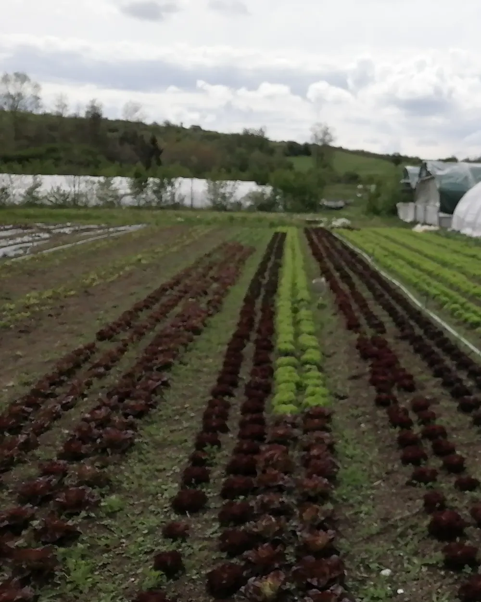
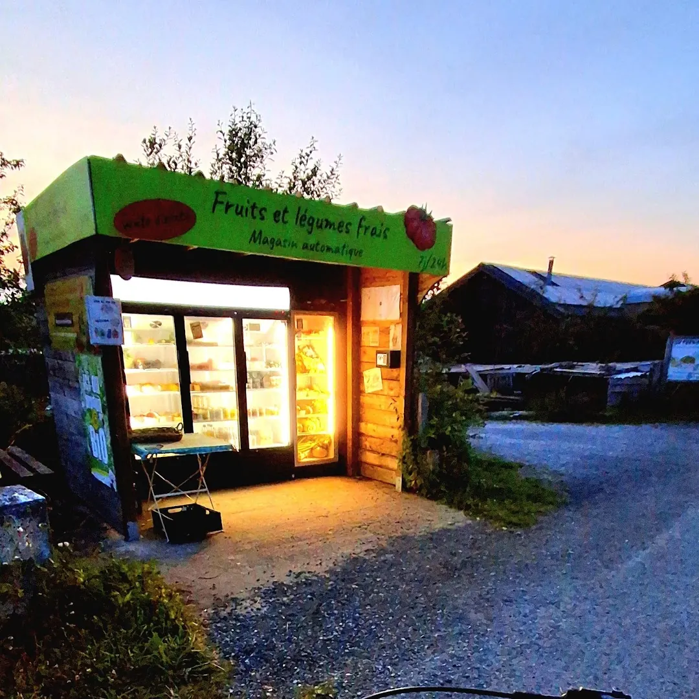
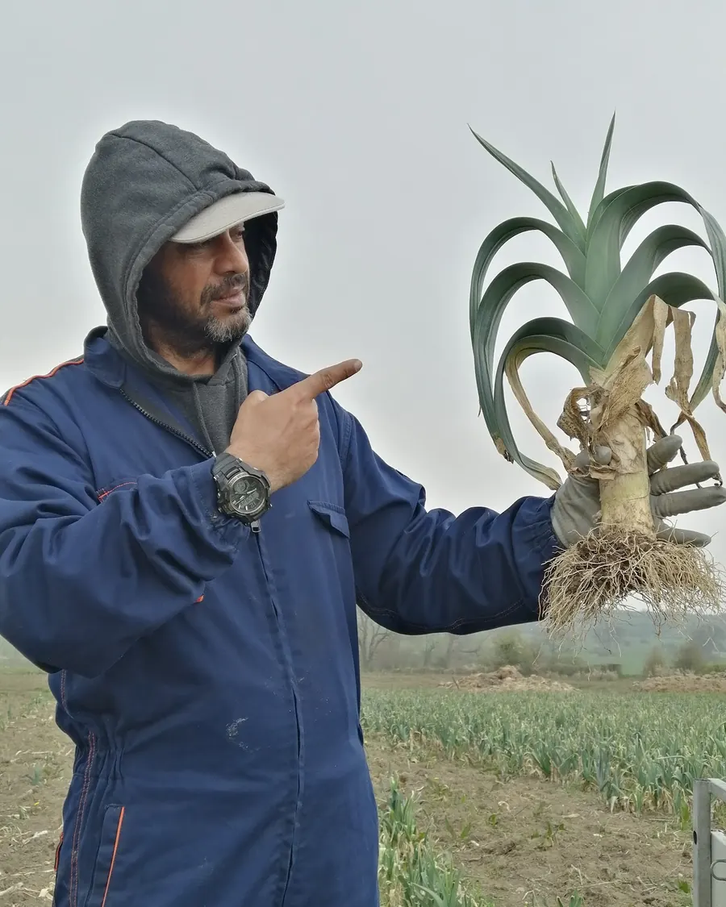
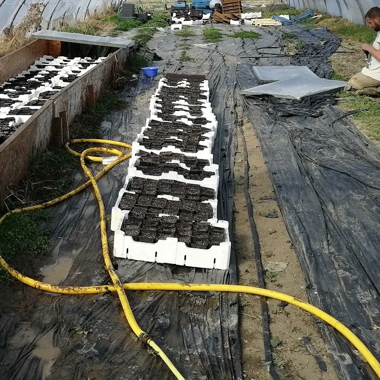
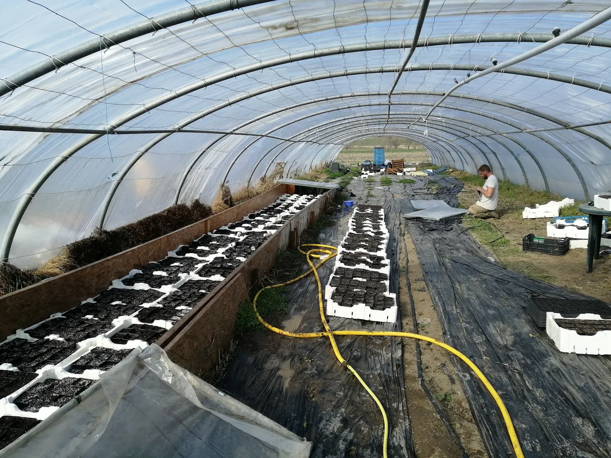
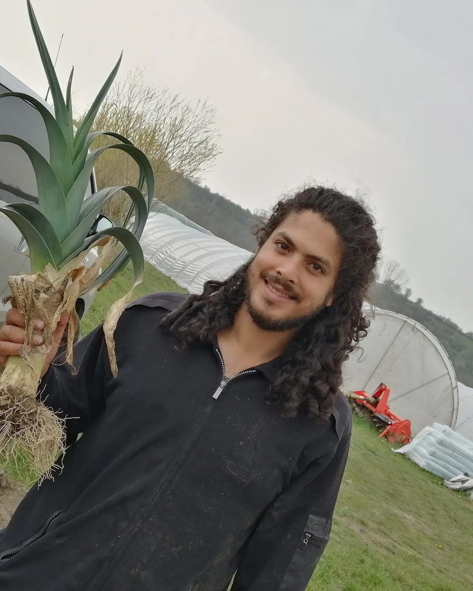
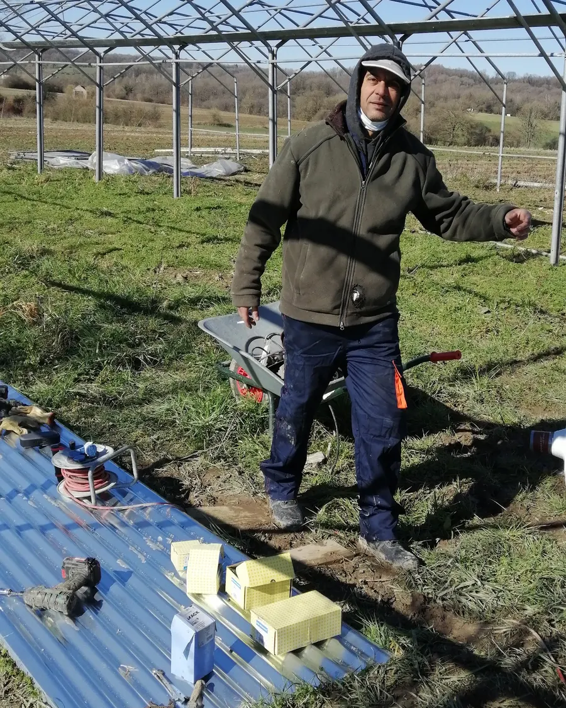
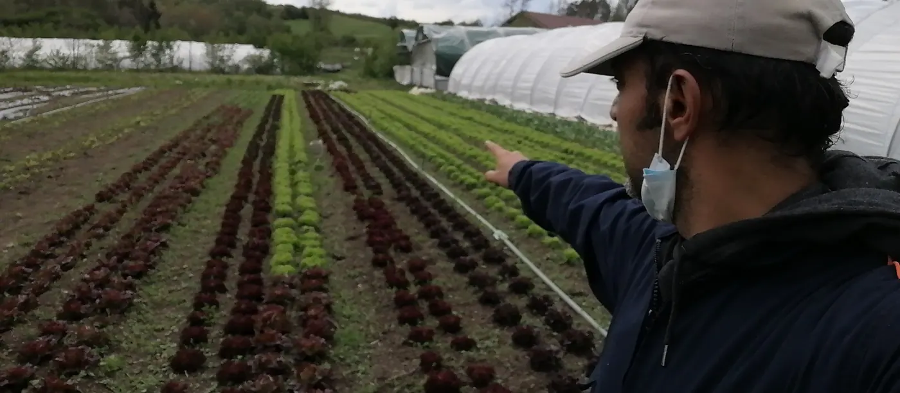

01Salades
Rouges et vertes, plantées en longs rangs au pied des tunnels.
Maraîcher · Senzeilles, Cerfontaine
Des salades plantées en longs rangs, des poireaux sortis du champ, des semis sous les tunnels. Et devant la ferme, un magasin automatique de fruits et légumes frais.
Vente à la ferme le vendredi, 16 h – 19 h
Magasin automatique 7j/24h
4,4 sur 5 · 16 avis Google
 les rangs de salades
les rangs de salades

Ouvert7j/24hmagasin
Plein champ et tunnels, rue de la Tannerie à Senzeilles. Ce qui est prêt dépend de la saison : un coup de fil suffit pour le savoir.

01Rouges et vertes, plantées en longs rangs au pied des tunnels.
 02
02Arrachés au champ, racines et terre comprises : on ne fait pas plus frais.

03Les plants démarrent en mottes, à l'abri des tunnels, avant de partir au champ.
D'après les photos de la ferme publiées sur sa fiche Google et l'enseigne du magasin automatique (« Fruits et légumes frais »).




Le vendredi en fin de journée au petit magasin, ou quand vous voulez au distributeur devant la ferme.
Fruits et légumes fraisMagasin automatique · 7j/24h
Libre-service
7 jours sur 7, 24 heures sur 24
Des vitrines réfrigérées remplies de produits frais, devant la ferme. On s'arrête en voiture ou à vélo, on choisit, on repart.
« Très belle ferme innovante grâce à son nouveau distributeur de légumes. […] »Isabel M., avis Google
Vente à la ferme
Le vendredi, de 16 h à 19 h
« […] Un très joli petit magasin où le patron est à l écoute de sa clientèle »Isabel M., avis GoogleDemander ce qui est prêt
Horaires : fiche Google de la ferme. Ouverture 7j/24h : enseigne du magasin automatique, visible sur la photo.
En rouge : la vente à la ferme (horaires de la fiche Google).
Magasin automatique : tous les jours, 24 h/24, selon son enseigne.